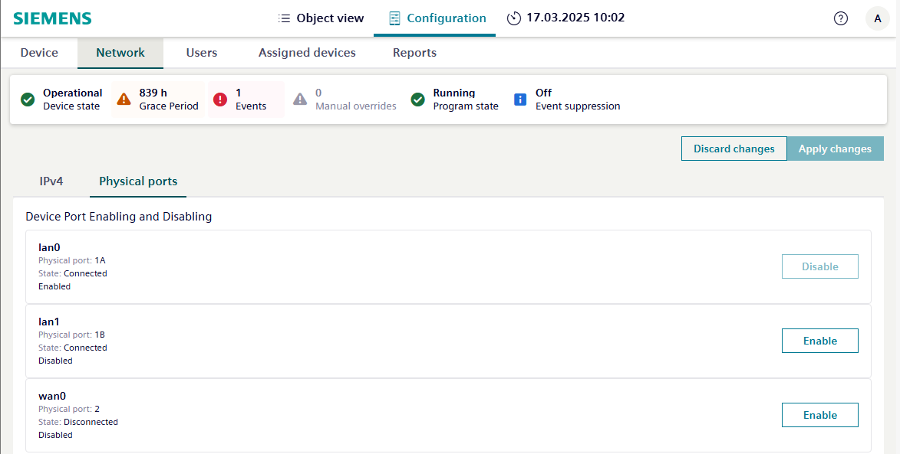

Enabling/disabling the physical ports
The Physical ports tab allows you to enable or disable ports on your controller and displays information about the ports of a device. A port that is both connected and true is in use. If a port can be disabled and you attempt to disable it, you will receive a notification that requires you to confirm or cancel the action before proceeding. Unused, open ports are primarily a risk for a cyberattack.
Enabling/enabling the physical ports of a device

Setting | Description |
|---|---|
Physical ports | Name of the port connection. |
State | Link state of the hardware network. |
Enable/Disable | Usage status of the port. |